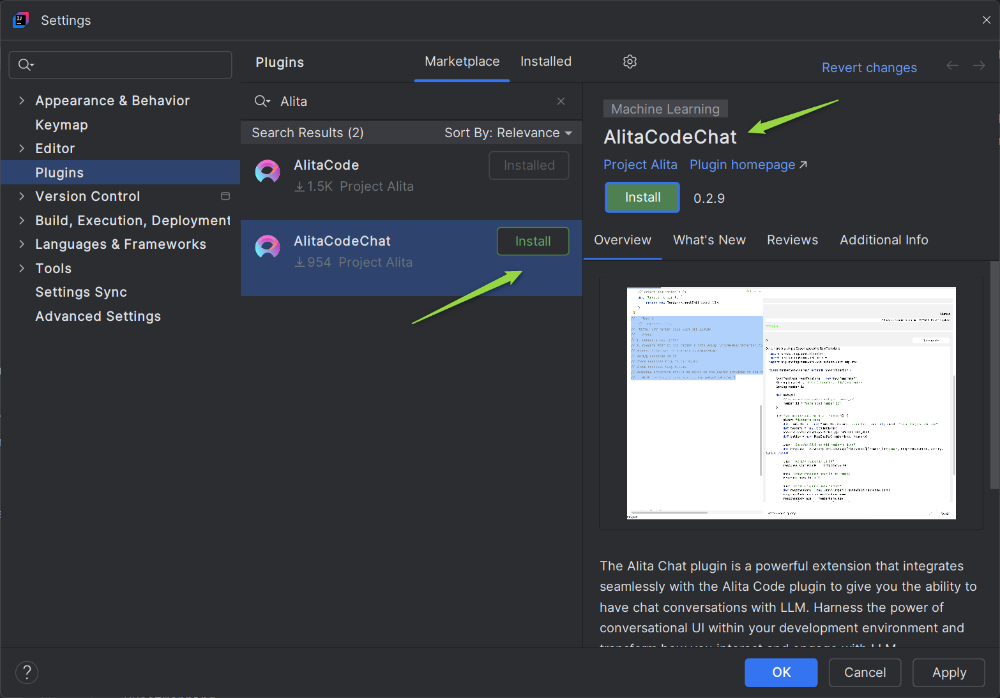
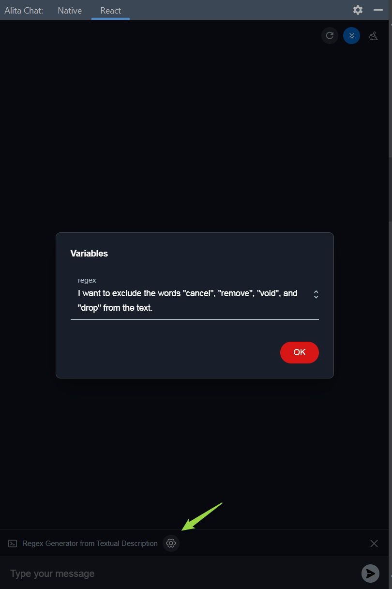

Alita Code Chat
Alita Code Chat for VSCode and IntelliJ is an auxiliary GUI for Alita Code, you can utilize the functionality of Alita Code and you can also chat with ELITEA HUB.
Pre-requisite
Alita Code Chat operates in conjunction with Alita Code for both VS Code and IntelliJ. To utilize Alita Code Chat, you must first install Alita Code from their respective marketplaces:
- VS Code: Install Alita Code from the VS Code Marketplace.
- IntelliJ: Install AlitaCode from the JetBrains Marketplace.
Important: Ensure that Alita Code is not only installed but also properly configured with ELITEA HUB to function correctly. For detailed installation and configuration instructions, please refer to the Alita Code documentation. This step is crucial for enabling the full capabilities of Alita Code Chat within your development environment.
Features list:
- Chat with ELITEA directly. It will use the model settings set by Alita Code extension.
- Type trigger chat to add participants to chat:
/for prompt,#for datasources and@for agents.
Note: Alita Code Chat doesn't support Chat History, in case of restarting VS Code or IntelliJ, the Chat History will be cleaned.
Alita Code Chat for VS code
Alita Code Chat is a visual studio extension to work as chatting companion using Alita Code.
Installation
Getting started with Alita Code Chat is straightforward:
- Navigate to the Extensions section in VS Code.
- Search for Alita Code Chat in the Marketplace and click Install.
Note: After successful installation Alita Code Chat shortcut will be added to left menu of VS Code.
Alita Code Chat Usage
With Alita Code Chat set up, you can now:
- Prompts - call and use prompts configured in ELITEA HUB.
- Datasources - call and use datasources configured in ELITEA HUB.
- Agents - call and use agents configured in ELITEA HUB.
- Chat - is a specific type of input designed for conversational AI models, which aims to initiate or guide a dialogue. This can be in the form of a question, statement, or command that simulates human-like interaction, prompting the AI to produce a conversational response for engagement.
Important: To successfully call and utilize prompts, datasources, or agents from ELITEA HUB, it is essential that these items are tagged with code in ELITEA HUB. This tag ensures that the resources are correctly categorized and accessible. Ensure that the code tag is applied to relevant prompts, datasources, and agents to enable their proper functionality within the ELITEA ecosystem.
Additional Interaction Features:
- Auto scroll to bottom: This option can be toggled on or off to automatically scroll to the bottom of the output as it is being generated. This feature is helpful during long outputs to keep the most recent content visible.
- Reload Alita Code Settings: This option allows to reload and update Alita Code settings.
- Stop generating: To stop generation of output.
Post-Output Actions:
- Continue the Dialogue: To keep the conversation going, simply type your next question or command in the chat box and click the Send icon.
- Copy the Output: Click the Copy to clipboard icon to copy the generated text for use elsewhere.
- Delete Output: To remove the current output from the chat, click the Delete icon.
- Purge Chat History: For a fresh start or to clear sensitive data, click the Clean icon to erase the chat history.
- Specialized Download Options for Tabular outputs. When the Gen AI generates output in a tabular format, additional options become available to manage and utilize this structured data:
- Download as xlsx: Allows you to save the tabular output directly in an Excel spreadsheet format, facilitating easy data manipulation and analysis.
- Copy as markdown: Enables copying the tabular output in markdown format, suitable for use in markdown-supported environments like GitHub or blogging platforms.
- Copy as html: Permits copying the tabular output in HTML format, ideal for integration into web pages or emails, preserving the formatting and structure.

Prompts
To call and use Prompts from ELITEA HUB:
- Open the Alita Code Chat.
- Type
/in the chat box. - Select the prompt that you want to run.
- Version Selection: Prompts may have multiple versions. Ensure you select the appropriate version from the dropdown list as different versions may vary in functionality and variables.
- Variable Management: If the selected prompt version includes variables, a dialog will appear allowing you to input or modify the values. Prepopulated values might be present, or you may need to provide your own. Ensure that all required variables are correctly filled to execute the prompt accurately. You can adjust or update variable values at any time by clicking the Settings icon.
- Once all instructions for the prompt are set in the Context and/or Messages sections, you can start the execution by typing your text (be it a question or a command) into the chat box. Use simple commands like "Go", "Start Generating", "Execute", or "Run it" and click the Send icon to begin. These commands signal the Gen AI to process the information and generate the desired output based on the configured settings.
- If you need to start a fresh conversation or prompt, simply click the X icon to clear the current setup and begin anew.


Datasources
To call and use Datasources from ELITEA HUB:
- Open the Alita Code Chat.
- Type
#in the chat box. - Select the datasource that you want to run.
- Start conversation in the form of a question, statement, or command that simulates human-like interaction.
- If you need to start a fresh conversation or datasource, simply click the X icon to clear the current setup and begin anew.
Agents
To call and use Agents from ELITEA HUB:
- Open the Alita Code Chat.
- Type
@in the chat box. - Select the prompt that you want to run.
- Version Selection: Agents may have multiple versions. Ensure you select the appropriate version from the dropdown list as different versions may vary in functionality and variables.
- Variable Management: If the selected agent version includes variables, a dialog will appear allowing you to input or modify the values. Prepopulated values might be present, or you may need to provide your own. Ensure that all required variables are correctly filled to execute the agent accurately. You can adjust or update variable values at any time by clicking the Settings icon.
- Start conversation in the form of a question, statement, or command that simulates human-like interaction.
- If you need to start a fresh conversation or application, simply click the X icon to clear the current setup and begin anew.

Chat
- Open the AlitaCodeChat.
- Start conversation in the form of a question, statement, or command that simulates human-like interaction.
AlitaCodeChat for IntelliJ
AlitaCodeChat is an IntelliJ plugin to work as chatting companion using AlitaCode.
Installation
Getting started with AlitaCodeChat is straightforward:
- Navigate to the Settings→Plugins section in IntelliJ.
- Search for AlitaCodeChat in the Marketplace and click Install.

Alita Chat for IntelliJ offers two distinct modes to cater to different user preferences and integration styles. Each mode is designed to provide a seamless user experience while aligning with specific design philosophies:
- Native Mode: This mode is tailored to blend seamlessly with the IntelliJ environment. It adheres to the native design and style guidelines of IntelliJ, ensuring that the interface feels familiar and integrated for users who prefer consistency with their development environment.
- React Mode: Designed to echo the aesthetics and usability of ELITEA, this mode brings the distinctive look and feel of ELITEA's design language into IntelliJ. It's ideal for users who enjoy the ELITEA interface and wish to have a similar user experience within the IntelliJ platform.
Both modes are crafted to provide a robust and intuitive chat interface, allowing users to choose according to their design preference and familiarity.
Note:
- After successful installation AlitaCodeChat shortcut will be added to right menu of IntelliJ.
- To ensure seamless integration and functionality, the Alita Code and AlitaCodeChat plugins must be installed with matching versions. Please verify that both plugins are updated to the same version to avoid compatibility issues.
- To successfully call and utilize prompts, datasources, or agents from ELITEA HUB, it is essential that these items are tagged with
codein ELITEA HUB. This tag ensures that the resources are correctly categorized and accessible. Ensure that thecodetag is applied to relevant prompts, datasources, and applications to enable their proper functionality within the ELITEA ecosystem.
AlitaCodeChat Usage
Prompts
To call and use Prompts from ELITEA HUB:
- Open the AlitaCodeChat.
- Select the React or Native tab.
- Type
/in the chat box. - Select the prompt that you want to run.
- Version Selection: Prompts may have multiple versions. Ensure you select the appropriate version from the dropdown list as different versions may vary in functionality and variables.
- Variable Management: If the selected prompt version includes variables, a dialog will appear allowing you to input or modify the values. Prepopulated values might be present, or you may need to provide your own. Ensure that all required variables are correctly filled to execute the prompt accurately. You can adjust or update variable values at any time by clicking the Settings icon.
- Once all instructions for the prompt are set in the Context and/or Messages sections, you can start the execution by typing your text (be it a question or a command) into the chat box. Use simple commands like "Go", "Start Generating", "Execute", or "Run it" and click the Send icon to begin. These commands signal the Gen AI to process the information and generate the desired output based on the configured settings.
- If you need to start a fresh conversation or prompt, simply click the X icon to clear the current setup and begin anew.

Datasources
To call and use Datasources from ELITEA HUB:
- Open the AlitaCodeChat.
- Select the React or Native tab.
- Type
#in the chat box. - Select the datasource that you want to run.
- Start conversation in the form of a question, statement, or command that simulates human-like interaction.
- If you need to start a fresh conversation or datasource, simply click the X icon to clear the current setup and begin anew.

Agents
To call and use Agents from ELITEA HUB:
- Open the AlitaCodeChat.
- Select the React tab.
- Type
@in the chat box. - Select the agent that you want to run.
- Version Selection: Agents may have multiple versions. Ensure you select the appropriate version from the dropdown list as different versions may vary in functionality and variables.
- Variable Management: If the selected agent version includes variables, a dialog will appear allowing you to input or modify the values. Prepopulated values might be present, or you may need to provide your own. Ensure that all required variables are correctly filled to execute the agent accurately. You can adjust or update variable values at any time by clicking the Settings icon.
- Start conversation in the form of a question, statement, or command that simulates human-like interaction.
- If you need to start a fresh conversation or application, simply click the X icon to clear the current setup and begin anew.
Chat
- Open the AlitaCodeChat.
- Select either the Native or React tab.
- Start conversation in the form of a question, statement, or command that simulates human-like interaction.

Additional Interaction Features
- Auto scroll to bottom: This option can be toggled on or off to automatically scroll to the bottom of the output as it is being generated. This feature is helpful during long outputs to keep the most recent content visible.
- Reload Alita Code Settings: This option allows to reload and update Alita Code settings.
- Stop generating: To stop generation of output.
Post-Output Actions:
- Continue the Dialogue: To keep the conversation going, simply type your next question or command in the chat box and click the Send icon.
- Copy the Output: Click the Copy to clipboard icon to copy the generated text for use elsewhere.
- Delete Output: To remove the current output from the chat, click the Delete icon.
- Purge Chat History: For a fresh start or to clear sensitive data, click the Clean icon to erase the chat history.
- Specialized Download Options for Tabular outputs. When the Gen AI generates output in a tabular format, additional options become available to manage and utilize this structured data:
- Download as xlsx: Allows you to save the tabular output directly in an Excel spreadsheet format, facilitating easy data manipulation and analysis.
- Copy as markdown: Enables copying the tabular output in markdown format, suitable for use in markdown-supported environments like GitHub or blogging platforms.
- Copy as html: Permits copying the tabular output in HTML format, ideal for integration into web pages or emails, preserving the formatting and structure.